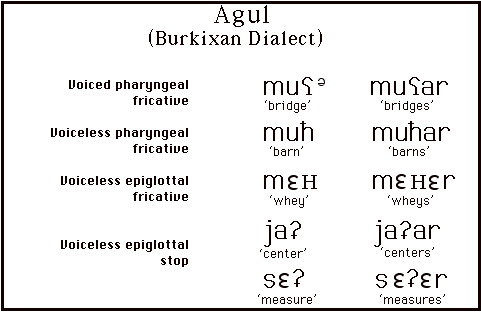
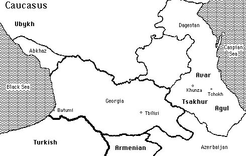

Agul is a Nakho-Dagestanian language (Samurian subgroup of the Lezgian family) of the northeast Caucasus. It is spoken by approximately 12,000 people in southern Dagestan, USSR. The language contrasts voiced and voiceless pharyngeal fricatives with voiceless epiglottal stops and fricatives. These contrasts are shown here in word-final and intervocalic position. The recordings were made by the Russian linguist S. Kodzasov of one female speaker of the Burkixan dialect. The transcription [ä] is taken directly from Kodzasov’s notes and is used to denote a slightly fronted vowel.
